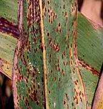
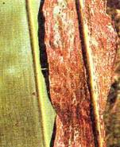
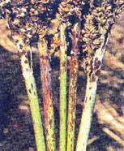

SORGHUM :: MAJOR DISEASE :: RUST
Rust - Puccinia purpurea
Symptoms
The fungus affects the crop at all stages of growth. The first symptoms are small flecks on the lower leaves (purple, tan or red depending upon the cultivar). Pustules (uredosori) appear on both surfaces of leaf as purplish spots which rupture to release reddish powdery masses of uredospores. Teliopores develop later sometimes in the old uredosori or in telisori, which are darker and longer than the uredosori. The pustules may also occur on the leaf sheaths and on the stalks of inflorescence.
{kind=link}
|  |  |  |
Symptoms on leaves and stalk |
||
Pathogen
The uredospores are pedicellate, elliptical or oval, thin walled, echinulated and darkbrown in colour. The teliospores are reddish or brown in colour and two celled, rounded at the apex with one germ pore in each cell. The teliospores germinate and produce promycelium and basidiospores. Basidiospores infect Oxalis corniculata(alternate host) where pycnial and aecial stages arise.
Favourable Conditions
- Low temperature of 10 to 12˚C favours teliospore germination.
- A spell of rainy weather favours the onset of the disease.
Disease cycle
The uredospores survive for a short time in soil and infected debris. Presence of alternate host helps in perpetuation of the fungus.
Management
- Remove the alternate host Oxalis comiculata.
- Spray the crop with Mancozeb at 2 kg/ha.